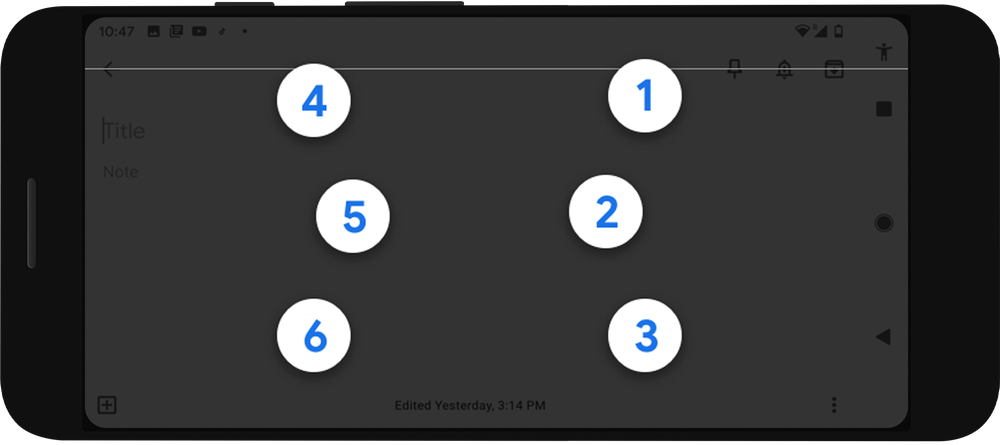

Below are several designs that embrace accessibility and inclusivity.
Nike FlyEase
Nike FlyEase lets you enjoy sport no matter your ability with technology developed from insights from the disability community.
Over the years, renowned Nike designer Tobie Hatfield has been involved in a number of projects that address these insights. One project that was on his radar for over three years was an entry-and-closure system for athletes who have trouble getting in and out of shoes, and securing them. While developing samples for a few of these individuals, Hatfield remained determined that the system be scalable for mass production. Enter inspiration Matthew Walzer.

Google Braille Keyboard
TalkBack braille keyboard is a new virtual braille keyboard integrated directly into Android. It’s a fast, convenient way to type on your phone without any additional hardware, whether you’re posting on social media, responding to a text, or writing a brief email. As part of our mission to make the world’s information universally accessible, we hope this keyboard can broadly expand braille literacy and exposure among blind and low vision people.